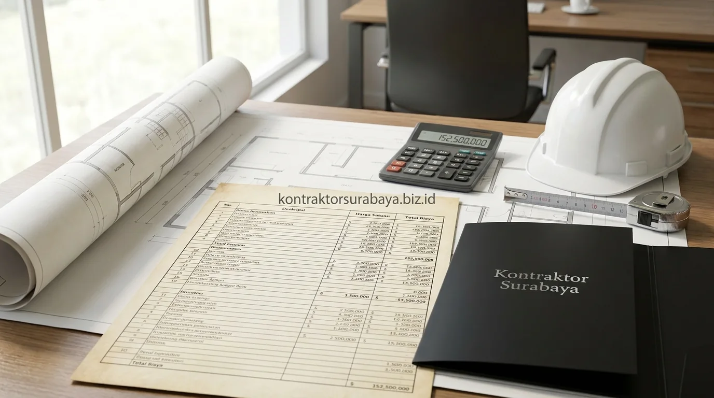

Kesalahan renovasi rumah yang paling sering terjadi biasanya bukan pada pemilihan material, melainkan pada tahap perencanaan awal sebelum pekerjaan fisik dimulai. Di kawasan perkotaan seperti Surabaya, Sidoarjo, dan Gresik, tidak sedikit pemilik rumah yang mengeluhkan biaya renovasi membengkak hingga dua kali lipat dari perkiraan semula.
Renovasi rumah sering kali membengkak jauh dari anggaran awal bukan karena harga material naik drastis, melainkan karena kesalahan perencanaan yang sebenarnya bisa dihindari sejak dini. Berikut sepuluh kesalahan fatal saat renovasi rumah yang paling sering ditemui dan berdampak langsung pada membengkaknya biaya belanja proyek:
1. Mulai Renovasi Tanpa RAB yang Rinci
RAB (Rencana Anggaran Biaya) yang hanya berupa perkiraan kasar membuat pemilik rumah sulit memantau apakah pengeluaran masih sesuai rencana. Tanpa rincian per item pekerjaan—mulai dari volume pembongkaran, pasangan bata, instalasi pipa, hingga plesteran—biaya tambahan yang muncul di tengah proyek sering kali baru disadari setelah dana yang tersedia sudah menipis.
2. Sering Mengubah Desain di Tengah Pengerjaan
Perubahan desain setelah pekerjaan dimulai umumnya memicu biaya bongkar-pasang yang tidak direncanakan sejak awal. Selain menambah pengeluaran material karena bahan yang sudah terpasang harus dirusak, perubahan ini juga memperpanjang waktu pengerjaan yang berdampak langsung pada membengkaknya biaya upah tukang harian.
3. Mengabaikan Kondisi Struktur Bangunan Lama
Renovasi yang langsung fokus pada tampilan estetika fasad atau interior tanpa mengecek kondisi struktur lama berisiko menemukan masalah tersembunyi seperti retak struktural kolom, sloof yang amblas, atau instalasi pipa air lama yang sudah rapuh dan berkarat. Perbaikan mendadak di tengah jalan untuk masalah semacam ini biasanya jauh lebih mahal dibanding jika sudah diinspeksi dan diperhitungkan sejak awal.
4. Memilih Kontraktor Hanya Berdasarkan Harga Termurah
Penawaran harga yang jauh lebih rendah dibanding kontraktor lain patut dicermati, karena biasanya ada item pekerjaan penting atau spesifikasi material standar yang sengaja tidak dimasukkan dalam penawaran awal. Selisih biaya ini pada akhirnya akan muncul sebagai tagihan pekerjaan tambah di tengah proyek yang justru membuat total biaya akhir jauh lebih mahal.
5. Tidak Menyiapkan Dana Cadangan (Contingency Budget)
Renovasi rumah, terutama bangunan lama yang berusia di atas 10 tahun, hampir selalu memiliki potensi temuan pekerjaan tambahan yang tidak terlihat sebelum dinding atau lantai dibongkar. Anggaran yang disusun pas-pasan tanpa menyisihkan dana cadangan minimal 10–15% membuat pemilik rumah kesulitan menutup biaya tak terduga tersebut sehingga proyek terancam mangkrak.

6. Membeli Material Secara Terpisah Tanpa Perhitungan Volume
Pembelian material yang dilakukan sedikit demi sedikit tanpa perhitungan volume total sering berujung pada kelebihan atau kekurangan stok. Kelebihan material keramik atau cat yang tidak terpakai tidak bisa dikembalikan, sedangkan kekurangan material menimbulkan biaya ongkos kirim berulang dan risiko perbedaan kode warna (batch lot) pada keramik atau granit.
7. Mengabaikan Perizinan Renovasi (PBG Perubahan)
Renovasi yang mengubah struktur utama, membongkar dinding penopang, atau menambah lantai ke atas (dak tingkat) umumnya tetap memerlukan penyesuaian izin PBG. Mengabaikan hal ini berisiko menimbulkan teguran dinas tata ruang, denda administratif, hingga kewajiban pembongkaran paksa sebagian bangunan yang sedang dikerjakan.
8. Tidak Menentukan Prioritas Pekerjaan
Mengerjakan semua bagian rumah secara bersamaan tanpa urutan prioritas membuat anggaran tersebar tidak teratur dan sulit dikontrol. Menentukan area vital mana yang perlu diselesaikan lebih dulu (seperti perbaikan atap bocor dan struktur sebelum masuk ke pengecatan atau interior) membantu pemilik rumah mengalokasikan dana secara lebih terarah.
9. Terlalu Sering Mengganti Tukang atau Vendor
Pergantian tukang atau vendor material di tengah proyek biasanya memerlukan waktu adaptasi ulang terhadap desain dan spesifikasi yang sudah disepakati sebelumnya. Pekerja baru sering kali menolak melanjutkan pekerjaan tukang lama tanpa membongkar sebagian hasil sebelumnya, yang pada akhirnya melipatgandakan biaya tenaga kerja dan material.
10. Tidak Melibatkan Kontraktor Sejak Tahap Perencanaan
Melibatkan kontraktor hanya di tahap eksekusi tanpa diskusi sejak perencanaan awal membuat potensi kesalahan desain atau ketidaksesuaian anggaran baru terlihat setelah pekerjaan berjalan. Diskusi sejak awal bersama tim teknis berpengalaman membantu menyelaraskan ekspektasi desain estetis dengan kondisi anggaran riil yang tersedia.
"Kunci renovasi rumah yang hemat dan sukses terletak pada presisi RAB sebelum palu pertama diayunkan; pencegahan salah desain di awal menghemat jutaan rupiah biaya bongkar pasang."
Konsultasikan rencana renovasi rumah Anda bersama tim ahli kami agar terhindar dari pembengkakan biaya. Pelajari rincian paket pengerjaan pada halaman jasa renovasi rumah Surabaya, atau hitung estimasi biaya proyek Anda pada halaman RAB & estimasi biaya.